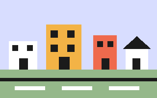
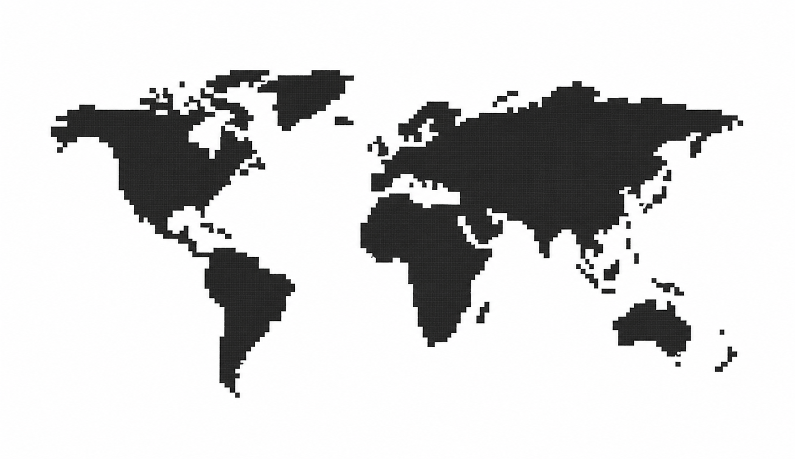

City launch
A tiny static site became a complete product desktop.
320 × 200 · SVG
18 effects · composable

A tiny static site became a complete product desktop.

Classic OS markers remain semantic HTML over a world map.
Use arrow keys to move between slides.